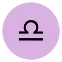

Handoff §14. Under prefers-reduced-motion: reduce the one orchestrated moment — the chart wheel’s entrance — does not play, and every element renders at its final position and opacity. Nothing on the page depends on an animation completing, so there is no state a reduced-motion visitor can fail to reach.

Tennis player · United States · born 1981
Libra 3.5° · born September 26, 1981
Five of the ten placements whose signs are settled stand in Libra — the Sun, Mercury, Jupiter, Saturn and Pluto. The placements whose signs could change with an unknown hour are not counted. A cluster that size becomes the section the rest of the chart plays around.
Positions at 12:00 civil time in Saginaw — a reference instant, not a birth time.
The Sun sits at 3.5° Libra — the first decan, 0°–10°, which the tradition sub-rules by Venus. Degrees matter more than the sign label here: two people born a fortnight apart share Libra and share almost nothing else about where the Sun actually stood.
The tightest geometry in the chart puts Venus at right angles from Mars, 0.6° off exact. The old texts treat a square as the aspect you feel earliest and thank latest: obstruction first, competence afterwards. Behind it, Neptune sextile Pluto at 1.2°, and Mars sextile Jupiter at 1.6° — both still well inside the orbs this site uses. Every angle named here holds for the whole of that day at the birthplace, so an unknown hour cannot take it away.